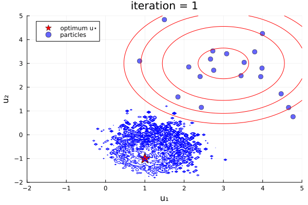
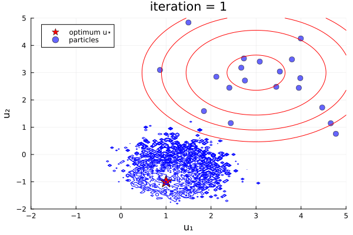
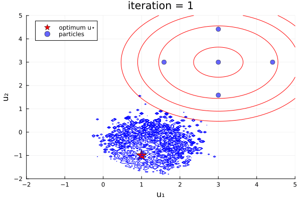
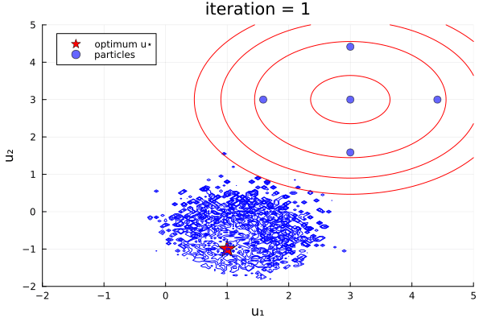

EnsembleKalmanProcesses
EnsembleKalmanProcesses.jl (EKP) is a library of derivative-free Bayesian optimization techniques based on ensemble Kalman Filters, a well known family of approximate filters used for data assimilation. The tools in this library enable fitting parameters found in expensive black-box computer codes without the need for adjoints or derivatives. This property makes them particularly useful when calibrating non-deterministic models, or when the training data are noisy.
Our processes and quick recommendations
Here are loose recommendations and rough scalability in the current implementations
- Playground option:
Inversion($10^3$ inputs, $10^3$ outputs) - simple, and handles large input spaces, and very modifiable with all the bells-and-whistles of the package. - Efficient option:
TransformUnscented($10^1$ inputs, $10^7$ outputs) - Very efficient, and quick converging for large outputs. However, strongly couples ensemble-size to input dimension, and can not as robust to model failures and noise. - Scalable and Robust option:
TransformInversion($10^2$ inputs, $10^7$ outputs) - Less efficient convergence thanTransformUnscented, but only weakly couples ensemble size with input dimension, and more robust to model failures and noise. - With uncertainty:
Sampler($10^2$ inputs, $10^3$ outputs) - generally slower to converge than inversion tools, but the final ensemble spread quantifies uncertainty.
Quick links!
- How do I build prior distributions?
- How do I access parameters/outputs from the ekp object?
- How do I plot convergence errors or parameter distributions?
- How do I build good observational noise covariances
- How do I build my observations and encode batching?
- What ensemble size should I take? Which process should I use? What is the recommended configuration?
- What is the difference between
get_uandget_ϕ? Why do the stored parameters apperar to be outside their bounds? - What can be parallelized? How do I do it in Julia?
- What is going on in my own code?
- What is this error/warning/message?
- Where can i walk through a simple example?
Learning the amplitude and vertical shift of a sine curve  See full example for the code.
See full example for the code.
The library
Currently, the following processes are implemented in the library. More details given on respective pages:
Inversion()creates Ensemble Kalman Inversion (EKI) "finite time" - The traditional optimization technique based on the (perturbed-observation-based) Ensemble Kalman Filter EnKF (Iglesias, Law, Stuart, 2013). This takes a transport view, initializing ensembles at the prior, and the posterior mode and (roughty-approximated) uncertainty) are estimated at finite algorithm time.
 
Inversion(prior)creates Ensemble Kalman Inversion (EKI) "infinite time" - EKI with an augmented state that enforces the prior, (e.g., TEKI Chada, Stuart, Tong). Can be initialized off-the-prior, and ensemble collapses to the posterior mode at infinite algorithm time (e.g., Section 4.5 of Calvello, Reich, Stuart).


TransformInversion()Ensemble Transform Kalman Inversion (ETKI) "finite time" - An optimization technique based on the (square-root-based) ensemble transform Kalman filter (Bishop et al., 2001, Huang et al., 2022).
TransformInversion(prior)Ensemble Transform Kalman Inversion (ETKI) "infinite time" - ETKI with an augmented state that enforces the prior. (see EKI "infinite time")
GaussNewtonInversion(prior)Gauss Newton Kalman Inversion (GNKI) [a.k.a. Iterative Ensemble Kalman Filter with Satistical Linearization] - An optimization technique based on the Gauss Newton optimization update and the iterative extended Kalman filter (Chada et al., 2021, Chen & Oliver, 2013),


Sampler(prior)Ensemble Kalman Sampler (EKS) - also obtains a Gaussian Approximation of the posterior distribution, through a Monte Carlo integration Garbuno-Inigo et al, 2020, ("ALDI" variant)


Unscented(prior)Unscented Kalman Inversion (UKI) - also obtains a Gaussian Approximation of the posterior distribution, through a quadrature based integration approach (Huang, Schneider, Stuart, 2022),
 
TransformUnscented(prior)Unscented Kalman Inversion (UKI) - An implementation of the UKI algorithm based on the linear-algebra tricks of the square-root filter (see ETKI).
SparseInversion(prior)Sparsity-inducing Ensemble Kalman Inversion (SEKI) - Additionally adds approximate $L^0$ and $L^1$ penalization to the EKI (Schneider, Stuart, Wu, 2020).
| Module | Purpose |
|---|---|
| EnsembleKalmanProcesses.jl | Collection of all tools |
| EnsembleKalmanProcess.jl | Implementations of EKI, ETKI, EKS, UKI, and SEKI |
| Observations.jl | Structure to hold observational data and minibatching |
| ParameterDistributions.jl | Structures to hold prior and posterior distributions |
| DataContainers.jl | Structure to hold model parameters and outputs |
| Localizers.jl | Covariance localization kernels |
Authors
EnsembleKalmanProcesses.jl is being developed by the Climate Modeling Alliance. The main developers are Oliver R. A. Dunbar and Ignacio Lopez-Gomez.